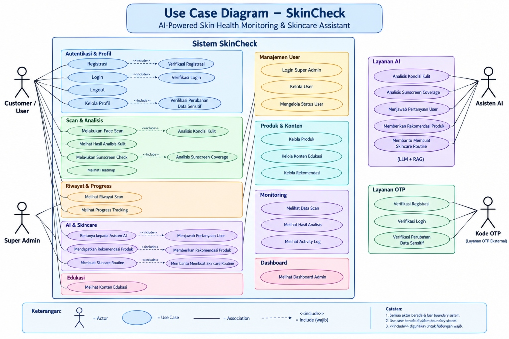
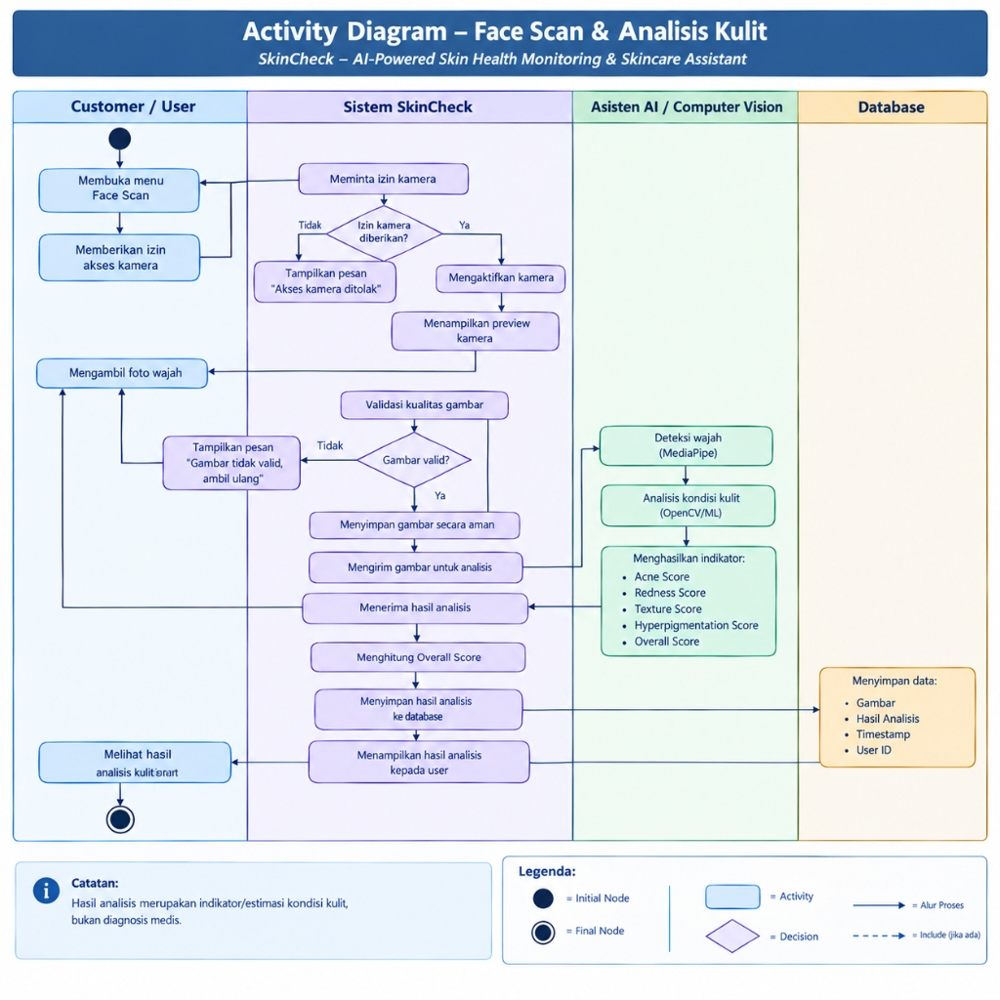
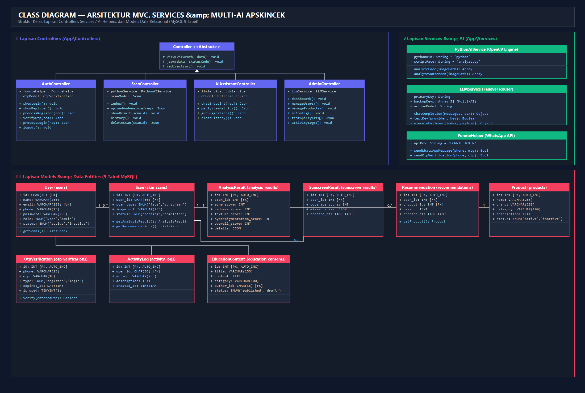
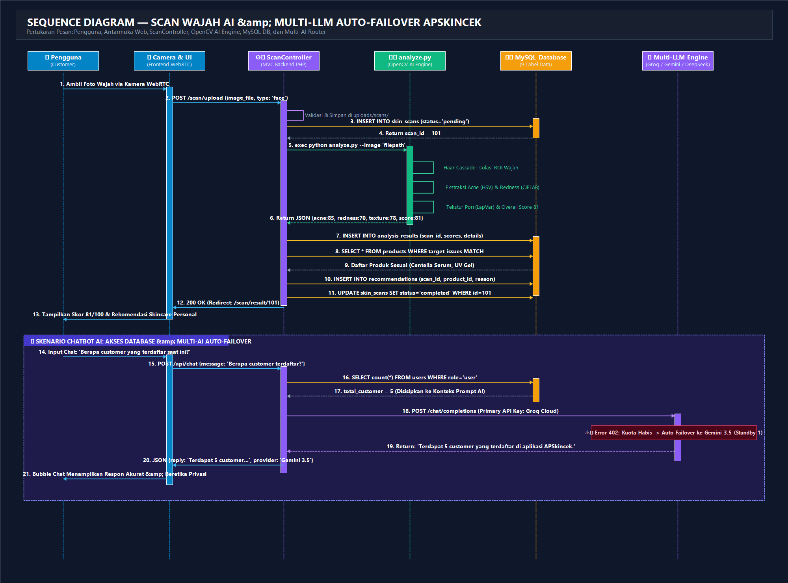

SkinCheck
AI-Powered Skin Health Monitoring & Skincare Assistant
Platform pemantauan visual kesehatan kulit wajah harian dan evaluasi cakupan tabir surya (*sunscreen*) memadukan Computer Vision (MediaPipe & OpenCV), sistem Multi-LLM auto-failover, verifikasi WhatsApp OTP, dan rekomendasi produk terikat katalog.
Customer, Super Admin, Layanan AI & Layanan OTP
Acne, Redness, Texture, Pigment & Overall Score
Auto-Failover Groq, Gemini 3.5, DeepSeek, OpenAI
Arsitektur MVC & Database Terintegrasi Cerdas
Product Requirements Document (PRD Revisi MVP)
Spesifikasi produk, problem statement, persona, ruang lingkup, dan safety guardrails non-medis.
- Sulit Evaluasi Efektivitas Skincare: Pengguna tidak memiliki alat ukur objektif untuk memantau apakah produk yang dipakai benar-benar memperbaiki kulit.
- Penggunaan Sunscreen Tidak Merata: Kerusakan kulit akibat UV sering timbul karena area rentan (seperti samping hidung dan pelipis) terlewat saat aplikasi tabir surya.
- Salah Pilih Produk (Breakout): Konsumen kerap tergiur tren medsos tanpa memahami profil biologis kulitnya.
- Chatbot AI Sering Berhalusinasi: AI konvensional kerap mengarang merk fiktif atau memberikan klaim medis berbahaya.
- Computer Vision Non-Invasif: Analisis visual via kamera browser standar menggunakan OpenCV & MediaPipe.
- Estimasi Cakupan Tabir Surya: Deteksi persentase coverage dan penandaan area terlewat (*missed areas*).
- Rekomendasi Terikat Katalog Resmi: AI hanya merekomendasikan produk aktif di basis data (100% anti-halusinasi).
- Multi-LLM Auto-Failover: Uptime 99.9% dengan fallback instan Groq, Gemini 3.5, DeepSeek, dan OpenAI.
Individu berusia 17–40 tahun yang aktif merawat kulit wajah sehari-hari.
• Goals: Ingin skor kesehatan kulit objektif, validasi pemakaian sunscreen, dan konsultasi interaktif.
• Pain Points: Biaya klinik kecantikan mahal, bingung urutan produk, takut salah beli produk.
Tim pengelola operasional, kurator produk, dan administrator sistem SkinCheck.
• Goals: Mengontrol data pengguna, mengaudit log aktivitas, mengonfigurasi multi-API key AI tanpa restart server.
• Pain Points: Gangguan kuota limit API pihak ketiga, risiko kebocoran data pengguna.
- • Auth OTP WhatsApp (Fonnte)
- • Onboarding jenis kulit & goals
- • Face scan WebRTC
- • OpenCV 5 indikator skin score
- • Sunscreen coverage check
- • Rekomendasi produk terkurasi
- • Multi-LLM failover chatbot
- • Admin panel & AI config
- • Histori pemindaian & grafik tren
- • Routine builder (AM/PM)
- • Activity audit logs lengkap
- • Perbandingan foto baseline
- • Integrasi kamera sensor fisik UV
- • Telekonsultasi dokter Sp.KK
- • E-commerce payment gateway
Registrasi, login bcrypt, verifikasi token WhatsApp Fonnte.
Profil jenis kulit, skin concerns, preferensi sunscreen.
Skor kesehatan terkini, tombol scan, empty state.
MediaDevices API, oval guide, validasi format & resolusi.
Haar Cascade / MediaPipe, HSV, CIELAB a*, LapVar.
Estimasi coverage %, penandaan area belum kena.
Pencocokan aturan skincare berbasis database aktif.
Kueri agregat DB, multi-failover Groq/Gemini/DeepSeek.
Metrik dashboard, CRUD produk, konfigurasi kunci AI.
Linimasa perubahan skor dan riwayat scan.
Safety Guardrails & Medical Disclaimer (Wajib Kepatuhan)
- Hasil adalah Indikator Non-Medis: Seluruh output skor visual bukan merupakan diagnosis klinis penyakit kulit.
- Dilarang Meresepkan Obat Keras: AI tidak boleh menyarankan obat resep dokter seperti isotretinoin atau kortikosteroid potensi tinggi.
- Red Flag Routing: Jika terdeteksi tanda infeksi berat atau kecurigaan lesi ganas (melanoma), sistem wajib menampilkan peringatan merah dan menganjurkan konsultasi langsung ke Dokter Spesialis Kulit (Sp.KK / Sp.DVE).
Use Case Diagram — SkinCheck (Resmi)
Batas sistem SkinCheck, 2 Aktor Pengguna, 2 Aktor Layanan Eksternal, dan 9 Paket Fungsionalitas.

Registrasi, Login, Face Scan, Sunscreen Check, Heatmap, Riwayat, Tanya AI, dan Skincare Routine.
Login Admin, Kelola User & Status, Kelola Produk & Konten, Monitoring Scan & Log, serta Dashboard Admin.
Analisis Kulit, Sunscreen Coverage, Jawab Pertanyaan, Rekomendasi Produk, dan Skincare Routine.
Verifikasi Registrasi, Verifikasi Login, dan Verifikasi Perubahan Data Sensitif via token.
Activity Diagram — Face Scan & Analisis Kulit (Resmi)
Alur kerja sistematis melintasi 4 Swimlane: Customer, Sistem SkinCheck, MediaPipe & OpenCV, dan Database.

Buka menu Face Scan → Beri izin kamera → Ambil foto wajah → Melihat hasil analisis kulit.
Minta izin kamera → Preview aktif → Validasi kualitas gambar → Simpan aman → Hitung Overall Score.
Deteksi wajah (MediaPipe) → Analisis kondisi kulit (OpenCV/ML) → 5 Indikator (Acne, Redness, Texture, Pigment, Score).
Penyimpanan atomik: Gambar, Hasil Analisis, Timestamp, dan User ID secara terenkripsi.
Arsitektur MVC, Sequence Diagram & ERD 9 Tabel
Struktur kelas berorientasi objek, urutan interaksi pesan, serta relasi basis data relasional.



Prototipe Interaktif AI/UX Figma (Live Demo)
Uji interaktif alur Customer (Mobile) & Super Admin (Desktop) langsung di browser.
Naskah Pembicara & Teleprompter Sidang
Naskah kata demi kata yang diselaraskan khusus untuk Use Case & Activity Diagram resmi.
"Selamat pagi/siang kepada Bapak/Ibu dosen penguji. Pada hari ini saya mempresentasikan perancangan sistem SkinCheck, platform cerdas pemantauan kesehatan kulit dan evaluasi tabir surya berbasis Computer Vision dan Multi-LLM Chatbot. Melalui prioritas MVP (P0), sistem kami menghadirkan pemindaian visual non-medis yang terikat katalog produk resmi untuk mencegah halusinasi AI, serta menjamin ketersediaan layanan dengan arsitektur auto-failover."
"Pada Use Case Diagram SkinCheck, terdapat 4 aktor utama. Di sisi kiri adalah Customer/User dan Super Admin. Di sisi kanan adalah Layanan AI (LLM + RAG) dan Layanan OTP eksternal. Perhatikan bahwa proses registrasi, login, dan perubahan data sensitif meng-include verifikasi OTP secara wajib. Begitu pula pada pemindaian wajah dan sunscreen check yang meng-include analisis AI. Sementara Super Admin memiliki ruang lingkup terpisah untuk memantau data scan, activity log, serta mengelola katalog produk."
"Pada Activity Diagram, alur Face Scan dibagi ke dalam 4 Swimlanes: Customer, Sistem SkinCheck, Asisten AI/Computer Vision, dan Database. Pengguna meminta akses kamera, jika diizinkan pratinjau WebRTC aktif, lalu foto diambil. Sistem memvalidasi kualitas gambar sebelum mengirimkannya ke MediaPipe untuk deteksi wajah, dan OpenCV untuk mengekstrak 5 indikator: Acne Score, Redness Score, Texture Score, Hyperpigmentation Score, dan Overall Score. Seluruh metrik disimpan ke basis data secara atomik sebelum dirender kembali ke layar pengguna."
💡 Bocoran Pertanyaan Dosen Penguji
• Kenapa relasi OTP dan AI menggunakan <<include>>? Karena kedua proses tersebut bersifat mandatory (wajib) agar pendaftaran dan hasil skor dapat terbit.
• Apakah hasil analisis ini diagnosis medis? Bukan. Sistem kami secara eksplisit membatasi hasil sebagai indikator visual perawatan kulit kosmetika.